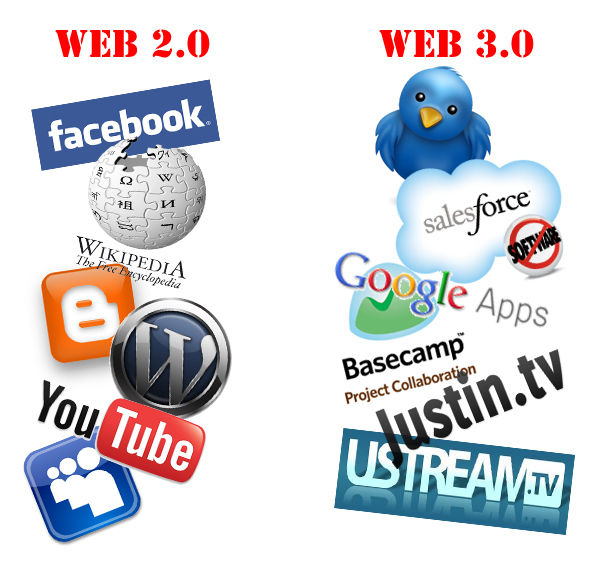

Web 2.0 y Web 3.0 ¿Qué es la Web 2.0?La Web 2.0 es la fase de Internet que se caracteriza por la interactividad y la colaboración de los usuarios, donde estos pueden crear y compartir contenido a través de plataformas sociales y blogs. ¿Qué es la Web 3.0?La Web 3.0, conocida como la web semántica, es la próxima evolución de Internet que utiliza tecnologías avanzadas como inteligencia artificial y blockchain para ofrecer un entorno más descentralizado, seguro y personalizado. ¿Cuáles son las principales diferencias entre Web 2.0 y Web 3.0?Las principales diferencias incluyen el nivel de interacción del usuario, la forma en que se gestionan y estructuran los datos, y el enfoque hacia la privacidad y seguridad. La Web 3.0 busca ofrecer un control mayor sobre la información personal y una experiencia más personalizada. ¿Cómo afecta la Web 3.0 a los emprendedores?La Web 3.0 abre nuevas oportunidades para los emprendedores al permitirles explorar tecnologías avanzadas y fomentar una participación activa del usuario. También les otorga mayor control sobre los datos y la posibilidad de crear comunidades más fuertes en torno a sus marcas. ¿La Web 2.0 desaparecerá?No necesariamente. La Web 2.0 seguirá coexistiendo con la Web 3.0. Sin embargo, es probable que las características de la Web 3.0 se integren progresivamente en las plataformas existentes, transformándolas en entornos más seguros y personalizados para el usuario. ConclusiónLa evolución de la Web 2.0 a la Web 3.0 representa un cambio paradigmático que redefine nuestra interacción con Internet. Desde una mayor interactividad y colaboración en la Web 2.0 hasta el control de los datos y la seguridad en la Web 3.0, cada fase ofrece ventajas y desventajas que deben ser consideradas por los emprendedores. Para aprovechar las oportunidades que presenta la Web 3.0, es vital mantener una mentalidad abierta hacia la innovación y la adaptación de nuevas tecnologías. |